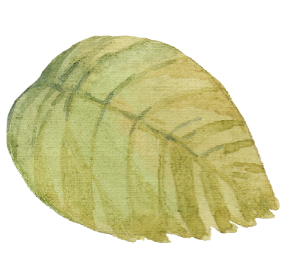

Hier kann deine ganz eigene Geschichte entstehen
Geschrieben und als Audiodatei erhältlich
Liebesgeschichten
Du möchtest deiner Liebsten / deinem Liebsten ein ganz
besonderes Geschenk machen?
Etwas, das man noch nach Jahren immer wieder gerne zu Hand
nimmt, um in alten Erinnerungen zu schwelgen?
Wie wäre es dann mit eurer ganz persönlichen
„lovestory“, allen Highlights, die eure Geschichte so
einzigartig machen.

Krimis
Du liebst Krimis und würdest gerne einmal selbst
eine tragende Rolle darin spielen?
Ob als Ermittler, Opfer oder gar der Täter des Geschehens?
Der Fantasie sind hier keine Grenzen gesetzt.
Werde jetzt die Hauptfigur in deinem ganz eigenen Krimi.
Komödien
Jeder von uns ist doch schon einmal in das ein oder andere
Fettnäpfchen getreten. Im ersten Moment vielleicht nicht die
schönste Erfhrung, doch es sind doch gerade Momente wie
diese, die uns noch Jahre später darüber lachen lassen und
uns den ein oder anderen Tag versüßen.
Erhalte hier deine eigene Komödie mit den lustigsten Anekdoten.
Drama
Das Leben schreibt nicht nur schöne Geschichten. Manchmal gibt
es kein Happy End. Aber sind es nicht genau diese Ereignisse,
die uns prägen, die unser weiteres Leben beeinflussen?
Wie schmerzlich ein Ereignis auch sein mag, es gehört nun einmal
zu uns. Und dieses dann als Geschichte zu lesen, kann uns helfen,
nach vorn zu schauen.
Lasse Dir hier deine dramatische Geschichte zu Papier
bringen.
Geschichten für Kinder
Abenteuer- / Fantasiegeschichten
Welches Kind liebt sie nicht. Die magische Welt der
Fantasie mit all Ihren Abenteuern.
Der eigene Ritt auf einem Drachen, Abenteuer im
verzauberten Wald….
Jedes Kind hat wohl seine ganz eigene Idee vom perfekten
Abenteuer.
Altersgerecht und individuell auf die eigenen Idden abgestimmt,
lasse ich ein einmaliges Abenteuer für dein Kind entstehen.
Gute Nacht- Geschichten
Rituale sind so wichtig für unsere Kleinen.
Und gerade das Vorlesen vorm Einschlafen ist ein besonderes
und zugleich wunderschönes Ritual. Umgeben von all der Digitalisierung
in unserem Alltag ist es von großer Bedeutung für Kinder
am Abend einer Einschlafgeschichte zu lauschen.
Und wäre es nicht wunderbar, wenn das Kind selbst die
Hauptrolle darin spielt.
Jedes Kind lässt sich durch ganz verschiedene Gedanken
beruhigen und kann dann sanft in den Schlaf finden.
Bestelle deine ganz eigene Gute Nacht- Geschichte.
Lustige Geschichten
Witze, Streiche, wohl etwas, das die meisten Kinder zum
Lachen bringt. Hat auch dein Sohn/ deine Tochter schon einmal
etwas angestellt, das Euch heute noch Tränen des Lachens in die
Augen treibt?
Wie schön wäre es, diese Situation noch einmal gemeinsam als Geschichte zu erleben?